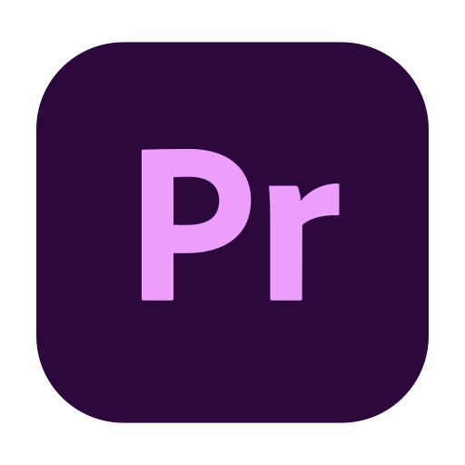

CIAO A TUTTI

Mi chiamo Martina, vivo a Siracusa e frequento l’ultimo anno di “Nuove Tecnologie dell’Arte” all’Accademia di Belle Arti di Catania. Fin da piccola sono sempre stata affascinata dalle attività artistiche e il disegno è sempre stata una costante.
È con questa consapevolezza che decido di intraprendere il mio percorso di studi; Dapprima frequento il liceo artistico, esplorando tutte le arti tradizionali, poi mi sposto in un’istituto tecnico commerciale all’indirizzo “Grafica e Comunicazione”, conseguendo lì il mio diploma ed infine mi iscrivo in Accademia, nella quale studio tutte discipline che uniscono l’arte con la tecnologia moderna, come: disegno digitale, animazione 2D e 3D, fotografia, video editing e compositing e altro ancora.
Ad oggi è in questo settore che si colloca il mio lavoro, privilegiando progetti di illustrazione, animazione e fotografia.


